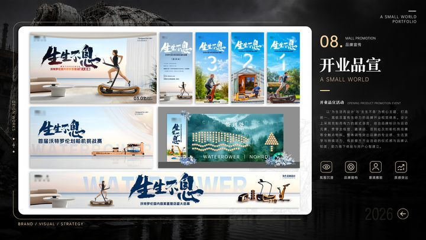
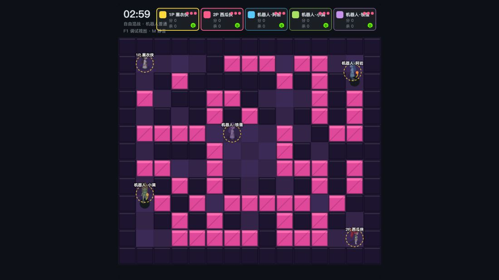
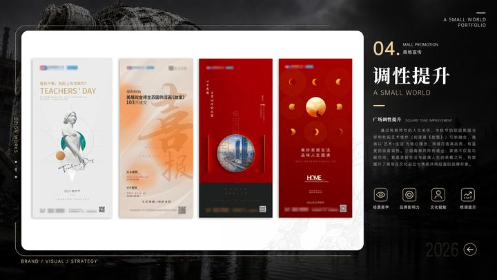
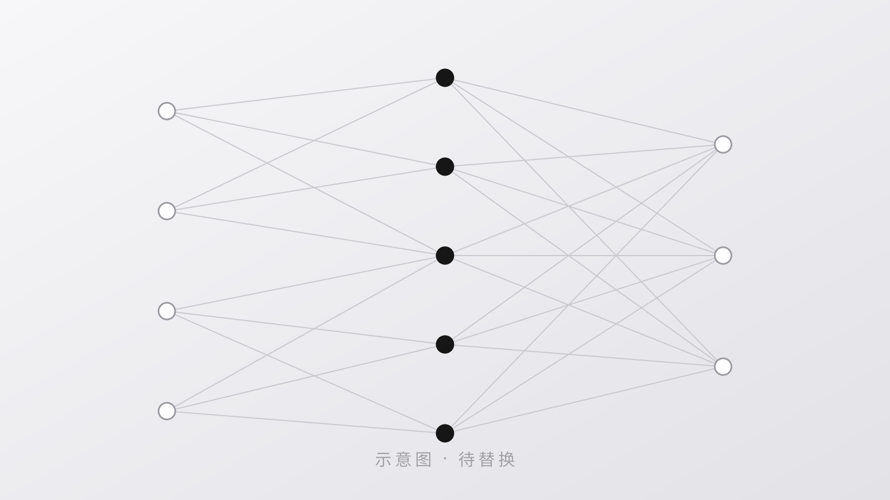

精选作品
鼠标左拉查看
把想法做成东西
平面设计是看家的手艺，另外四个方向是我这几年自己趟出来的。 它们看起来不一样，做的其实是同一件事——把一个模糊的念头，变成能拿出手的成品。
-
平面设计
品牌视觉、营销物料、终端规范。在运营商行业做了多年落地设计， 习惯从传播意图倒推画面，而不是从好看出发。

-
AI视频
用提示词调度视频模型，把脚本拆成分镜再生成成片。 擅长长镜头的时间分段控制、首尾帧接力，以及中文文字渲染的降风险方案。

-
小游戏开发
微信小程序《修仙小游戏-修仙》的设计与开发。 从视觉系统到七个页面的交互，一个人从头做到尾。

-
传统文化
把传统视觉语法拆开再装回现代媒介里——水墨的层次、书法的骨架、 篆刻的构成，落到界面和画面上还能站得住。

-
大模型部署
在本地把模型跑起来：量化部署、多模态推理、语音输入输出链路。 关心的是能不能落在自己的机器上，而不是只会调 API。

关于
我是张杰波，平面设计师。日常工作围绕运营商行业的品牌与营销物料展开， 从主视觉到落地执行的整套链路都做。
业余时间精力主要花在两件事上：一是琢磨 AI 工具到底能替人做到哪一步， 为此写过成套的提示词方法论，也在本地部署过模型、搭过语音链路； 二是把中国传统视觉里的东西，试着用现代的方式讲出来。
目前的状态是：手上能落地，脑子里还在往外扩。